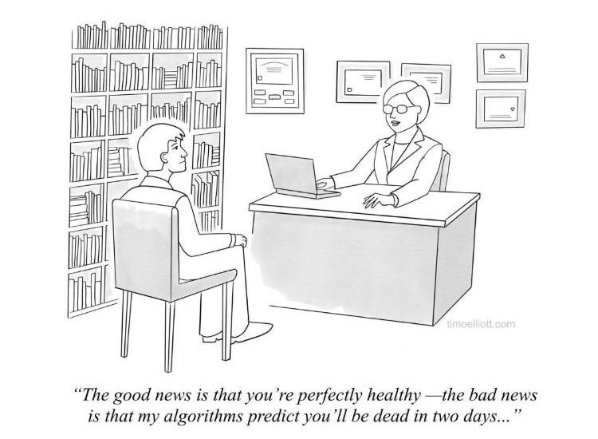

The goal of this project is to apply machine learning to a national pediatric inpatient database to evaluate features which contribute to mortality in cardiac surgery.
PHIS Database: The Pediatric Health Information System®, a comparative pediatric database, includes clinical and resource utilization data for inpatient, ambulatory surgery, emergency department and observation unit patient encounters for more than 45 children's hospitals. and create an algorithm to predict patients' survival based on various features given in the PHIS database.


On this page, we compare each model with their corresponding classification reports.

SO WHAT DID WE FIND?